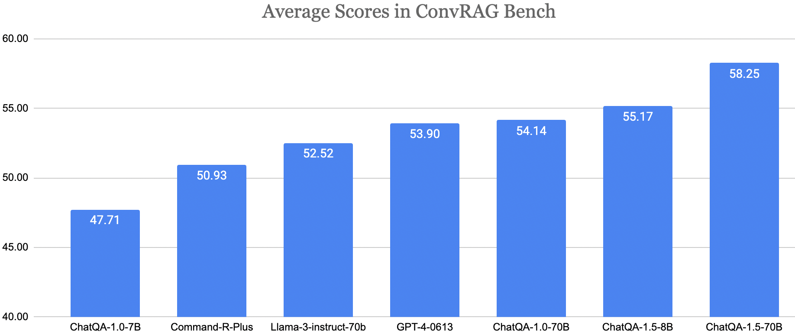

Today, we release ChatQA-1.5-8b and ChatQA-1.5-70b models, which excels at RAG-based conversational question answering (QA). ChatQA-1.5 is built using the recipe from ChatQA (1.0) on top of Llama-3 foundation model. Additionally, we incorporate more conversational QA data to enhance its tabular and arithmatic calculation capability.
ConvRAG Bench
We introduce ConvRAG Bench: a benchmark for retrieval/context-augmented conversational QA evaluation. ConvRAG Bench consisting of 10 datasets: Doc2Dial, QuAC, QReCC, TopioCQA, INSCIT, CoQA, HybriDial, DoQA, SQA, ConvFinQA, which covers both long and short text-based documents, tabular reasoning and arithmatic calculations. ConvRAG Bench also includes evaluations for unanswerable scenarios
Main Results

Unanswerable Case Evaluation
Training Datasets
We release training datasets which include our conversational QA dataset and single-turn QA datasets.